Nuestras intalaciones
The GYM POWER es un concepto en salud que ha ido evolucionando del aprendizaje hasta la experiencia. El tamaño, el equipo, la distribución y los elementos del diseño junto con el personal y los programas que se imparten, han sido cuidadosamente pensados para presentarles a ustedes un concepto fresco y único en cuanto a bienestar se refiere.
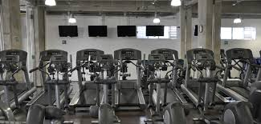
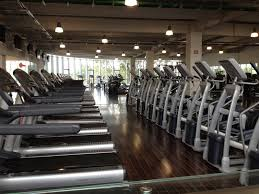
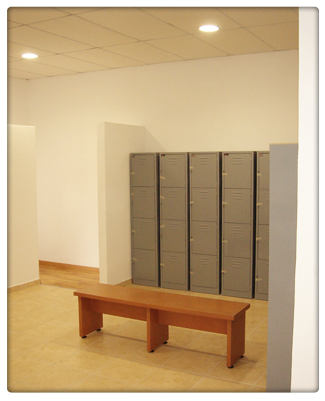
¿Unico?¿Uno mas?
Material de trabajo
Área Cardiovascular
Contamos con moderno equipo para que usted mejore o mantenga su condición cardiovascular. Cada aparato cuenta con sistema de audio independiente y diversos programas de quema de grasa, colinas, montaña y manual que monitoreara constantemente la intensidad de su ejercicio para que alcance los máximos resultados en el menor tiempo.
• Bicicletas Life Fitness
• Caminadoras Life Fitness
• Elípticas Cybex & Precor
• Escaladoras Precor & Stair Master
Área de Spinning
Ofrecemos nuestro salón de ciclismo con 20 modernas bicicletas e Instructores certificados que garantizan un ejercicio seguro y eficaz.
• Biciletas Schwinn
Area de Peso Libre e Integrado
Contamos con un área de 350 mt2 con lo último en equipo de reconocidas marcas, donde puede entrenar desde un atleta de alto rendimiento a una persona que desea rehabilitación.
• AB coaster • Abdominal crunch
• Back extensión
• Back lat pulldown
• Back upper “T”
• Biceps curl
• Chest Press
• Glute Issolator G18
• Hack Press
• Hip abduction
• Hip adduction
• Horizontal calf
• Incline Press
• Iso – lateral kneeling leg curl
• Leg extensión
• Leg press linear
• Oblique crunch
• Pectoral fly
• Remo
• Seated calf
• Seated leg curl
• Seated leg press
• Shoulders lateral rice
• Smith mashine
• Tricep press
• Universal mashine w/pulleys
• Upper back
• Mancuernas – Pesas: 5 Lbs. hasta 110 Lbs
• Barras Rectas & Barras Zetas: 20 Lbs. hasta 110 Lbs.
• Pesas Rusas: 5 Lbs. hasta 100 Lbs.
• Discos: 5 Lbs. hasta 45 Lbs.
Atrio de entrenamiento al aire libre
Único en su estilo, este jardín hará que su mente vuele a mil por hora, una excelente opción para los amantes del entrenamiento funcional y crossfit.
• Tapetes
• Sistema TRX
• Barras y pasamanos
• Bancos
• Cuerdas
Ring de entrenamiento subterráneo
Especialmente diseñado para actividades de contacto, este espacio se encuentra estratégicamente distribuido y equipado para amortiguar golpes aumentando la productividad de sus usuarios, evitando lesiones durante la práctica supervisada.
• Ring c/encordado (Tatami)
• Costales
• Peras
• Guanteletas
Studio
Nuestro salón de usos múltiples tiene un área de 50 mt2 construida en madera, con un sistema especial de amortiguación de impacto. Una de nuestras totales fortalezas es la variedad de programas de ejercicio en grupo, y la implementación de las técnicas y tendencias más nuevas en el mercado de fitness.
• Tapetes para yoga & strech
• Pelotas medicinales
• Barras y mancuernas
• Bloques de apoyo
• Sistema TRX
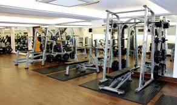
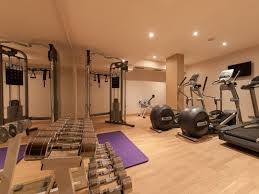
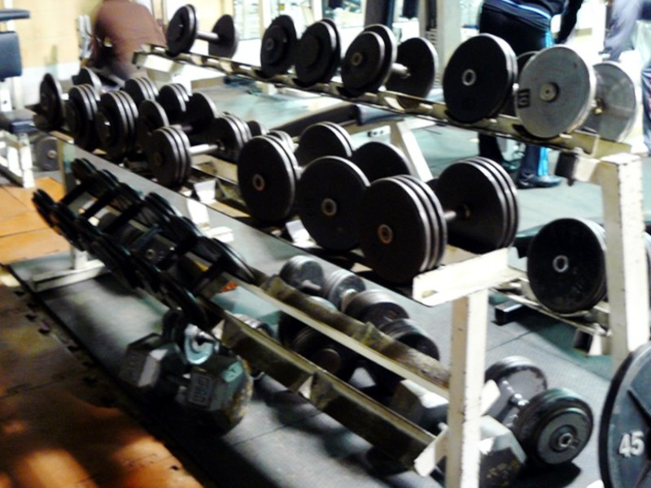
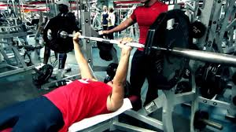
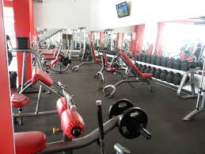
¿Unico?¿Uno mas?
Entrenadores
Marcos Flórez, el pionero en impulsar la figura del entrenador personal en España, nos explica en qué consiste esta figura: "Yo siempre lo comparo con alguien que está estudiando inglés. Todo el mundo sabe lo que es el profesor particular de inglés, pues es exactamente lo mismo. Hay profesores de inglés muy buenos, otros malísimos, otros que preparan los deberes para cada alumno cada día... Hay que tener en cuenta que estamos enseñando cosas distintas, pero al fin y al cabo somos 'profes' que tiramos de las orejas a nuestros alumnos", apunta.
Contar con el apoyo de un entrenador personal no sólo mejora los resultados de cualquier programa de ejercicio, sino que, sobre todo, contribuye a dar ánimos y no saltarse el entrenamiento. Y es que, para muchas personas, es la única forma de animarse (y obligarse) a hacer ejercicio. "Un conocido que también es entrenador personal me dice a veces, 'es que a mí me pagan por ser la conciencia', y no le falta razón", comenta Flórez.
Tom Hardy
La rutina de ejercicios y dieta que ayudaron al actor a lograr un impresionante aumento del volumen de su masa muscular para rodar la película “La última pelea” y “El caballero oscuro: La leyenda renace”.
Estatura: 175 cm
Peso: 86 kg
Fecha de nacimiento: 15 de septiembre de 1977
Películas más famosas: «El caballero oscuro: La leyenda renace», “Origen” y “La última pelea”.
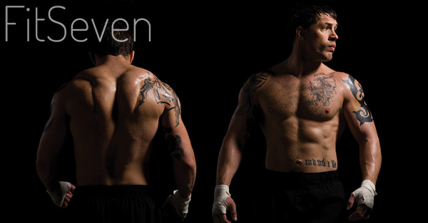
¿Unico?¿Uno mas?
Tarifas
Lunes a Viernes = (VISITA) $80
Sabados y Domingos = (VISITA) $50
Mensualidad= $800
Descuento de 50% a estudiantes y trabajadores jubilados
Todo retardo causa honorarios
¿Unico?¿Uno mas?
Productos
¿Qué es un suplemento alimenticio?
Un suplemento alimenticio (alimentario) es una vitamina, mineral o una hierba que usted toma para mejorar su salud o bienestar. En general, estos suplementos no están destinados para curar o tratar enfermedades o afecciones médicas, a menos que la Administración de Alimentos y Fármacos de los EE.UU. (FDA) los haya aprobado para el reclamo que éstos hacen con respecto a la salud.
Vitaminas y minerales
Las vitaminas y minerales, también conocidos como oligonutrientes, nutren su cuerpo y le ayudan a mantenerse sano. Usted puede obtener la mayoría de los oligonutrientes al comer una variedad de alimentos en su dieta diaria. Obtener oligonutrientes a través de los alimentos asegura que su cuerpo puede absorberlos adecuadamente.
Si usted no come una variedad de alimentos sanos, tales como frutas, vegetales (verduras), carnes magras y pescado, usted puede no estar obteniendo todos los oligoelementos que su cuerpo requiere. Un multivitamínico o un suplemento podrían ayudarle. Otras personas que podrían beneficiarse de tomar un multivitamínico o un suplemento incluyen:
Los vegetarianos estrictos (aquellos que no comen ningún producto animal ("vegans")
Las mujeres que están embarazadas o que están buscando quedar embarazadas
Mujeres que están lactando
Las mujeres que tienen períodos menstruales fuertes
Las mujeres que han pasado por la menopausia
Las personas que han sido sometidas a una cirugía de derivación gástrica ("gastric bypass surgery" con el objeto de bajar de peso.
Las personas que tienen una afección médica que afecta la manera como el cuerpo digiere los alimentos; por ejemplo una enfermedad gastrointestinal, intolerancia a la lactosa o alergias a los alimentos.
Las personas que tienen enfermedades del estómago, hígado, páncreas o de la vesícula biliar.
Aunque una dieta enfocada en una variedad de alimentos saludables reduce el riesgo de una enfermedad del corazón (cardiovascular) y riesgo de cáncer, no existe clara evidencia que indique que al tomar multivitaminas se obtenga el mismo resultado.
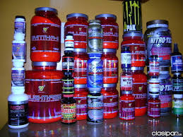
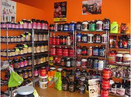
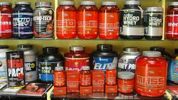
¿Unico?¿Uno mas?